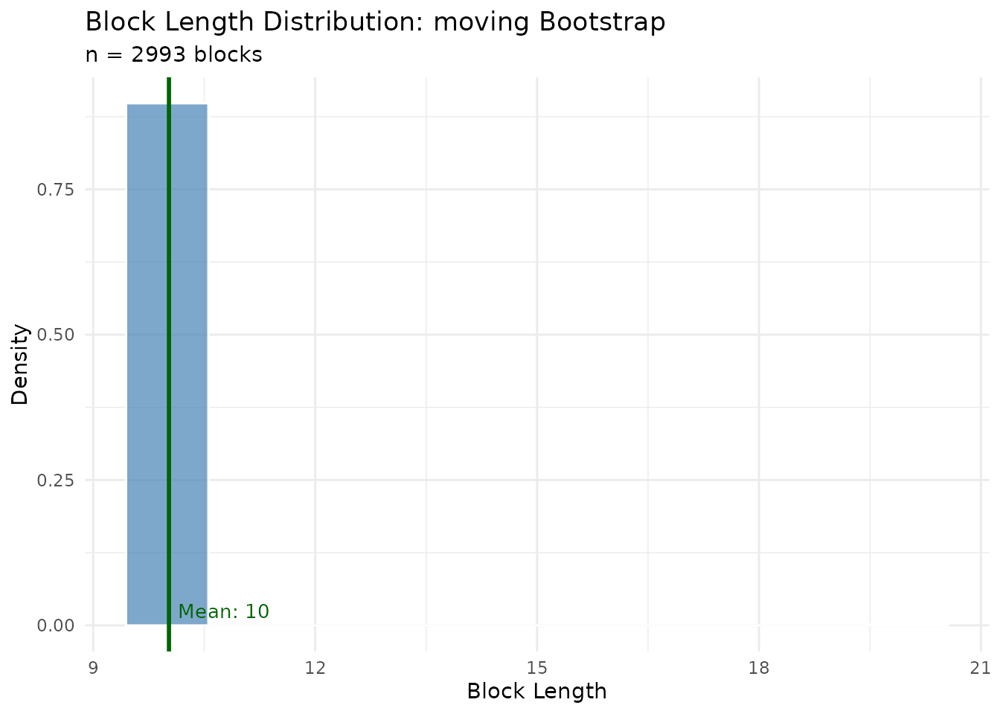
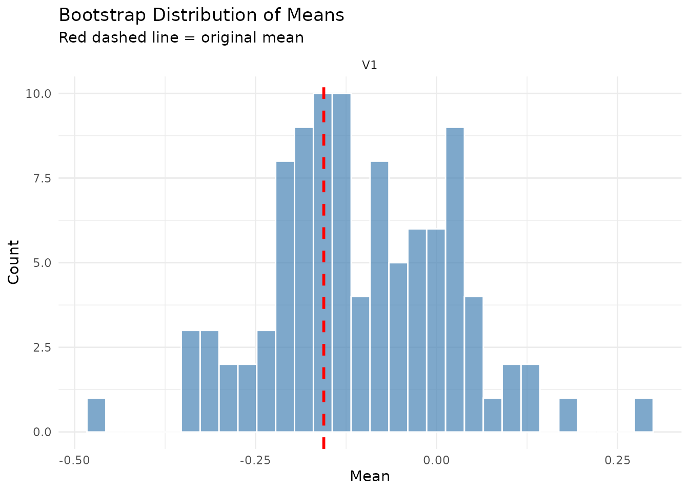
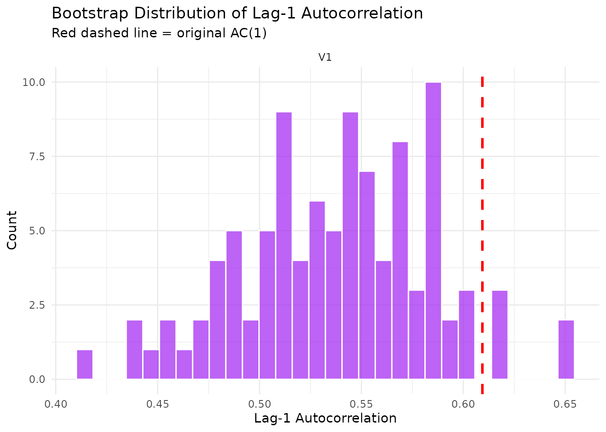
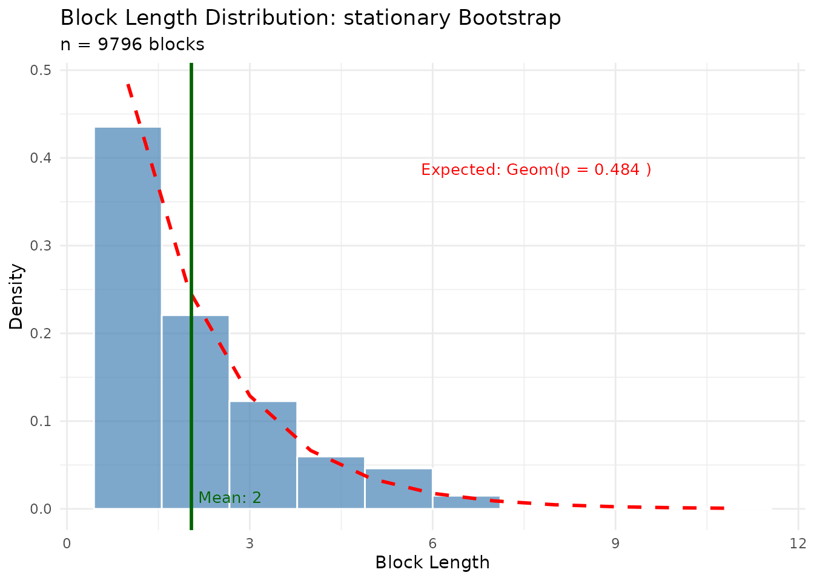
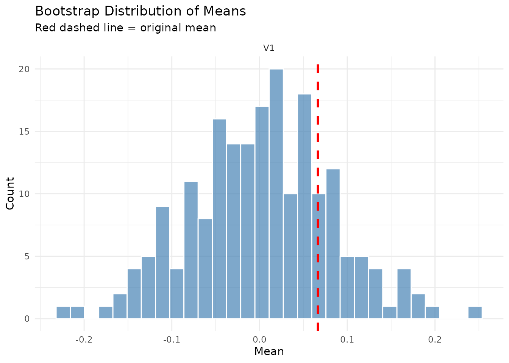
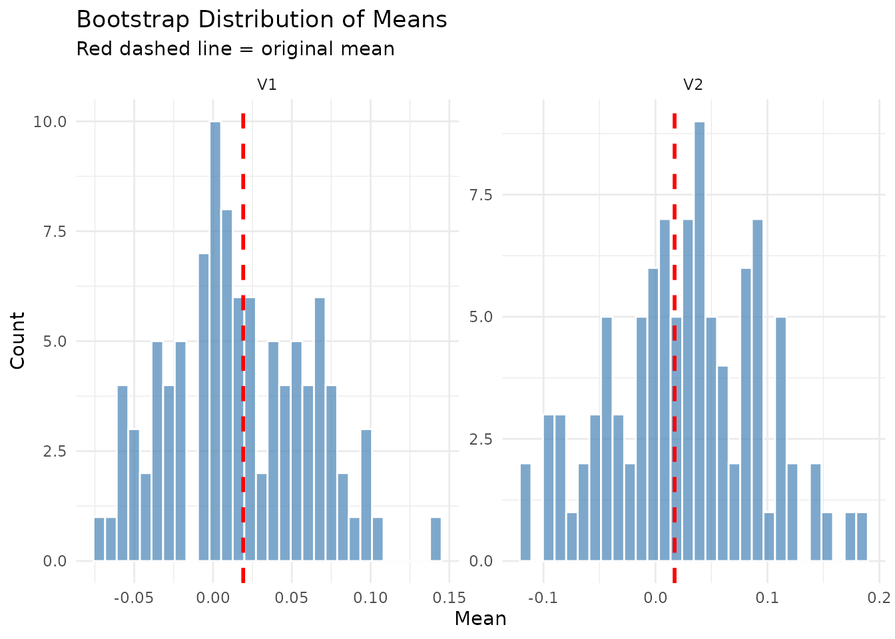
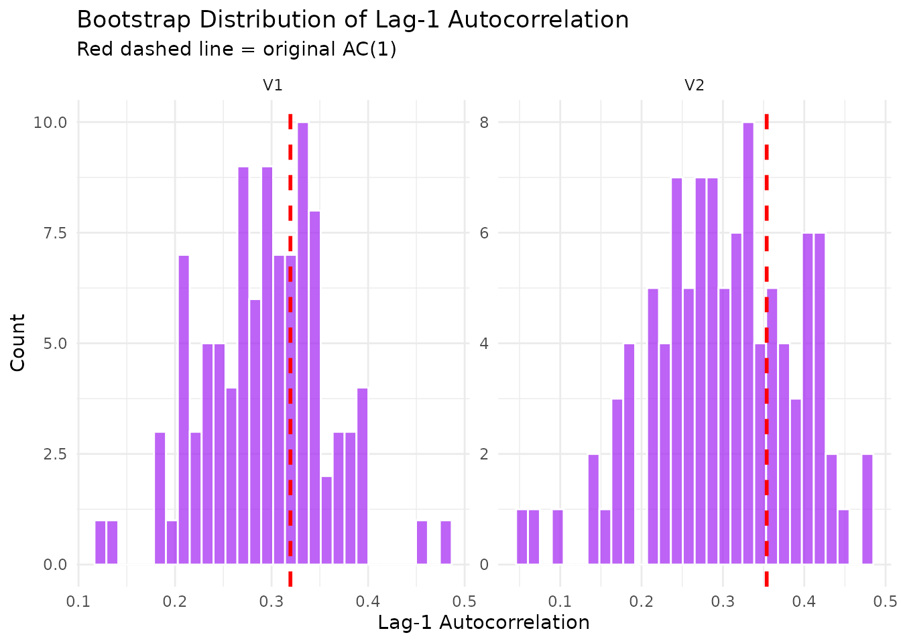

Bootstrap Diagnostics Guide
Understanding and Analyzing Bootstrap Output in tsbs
tsbs Package
2026-01-31
bootstrap_diagnostics.RmdIntroduction
The tsbs package provides a comprehensive diagnostics system for
analyzing bootstrap output. When you run tsbs() with
return_diagnostics = TRUE, you receive detailed information
about:
- Block composition: How bootstrap series are constructed from blocks of the original data
- Block statistics: Distribution of block lengths and starting positions
- Quality metrics: Comparison of original vs. bootstrap series statistics
- Method-specific information: Parameters and settings specific to each bootstrap type
This vignette demonstrates how to use these diagnostics to understand and validate your bootstrap analysis.
Quick Start
library(tsbs)
# Generate sample data: AR(1) process
set.seed(42)
n <- 300
x <- arima.sim(n = n, list(ar = 0.7))
# Run bootstrap with diagnostics enabled
result <- tsbs(
x = as.matrix(x),
block_length = 10,
bs_type = "moving",
n_boot = 300,
num_boots = 100,
func = mean,
return_diagnostics = TRUE
)
# View diagnostics summary
summary(result$diagnostics)
#> ========================================
#> tsbs Bootstrap Diagnostics Summary
#> ========================================
#>
#> BOOTSTRAP CONFIGURATION:
#> Bootstrap type: moving
#> Original series length: 300
#> Number of variables: 1
#> Number of replicates: 100
#> Generated: 2026-01-31 10:05:43
#>
#> CONFIGURATION PARAMETERS:
#> bs_type: moving
#> block_type: overlapping
#> taper_type: NA
#> tukey_alpha: NA
#> block_length: 10
#> n_boot: 300
#> num_blocks: NULL (auto-computed)
#> num_boots: 100
#> p: NULL (auto-computed)
#> p_method: NA
#> num_states: NA
#>
#> BOOTSTRAP SERIES LENGTHS:
#> Min: 300
#> Max: 300
#> Mean: 300
#>
#> BLOCK LENGTH STATISTICS:
#> Total blocks sampled: 2993
#> Mean block length: 10.02
#> SD block length: 0.48
#> Min block length: 10
#> Max block length: 20
#> Median block length: 10
#> 25th percentile: 10
#> 75th percentile: 10
#> Mean blocks per replicate: 29.93
#>
#> ORIGINAL vs BOOTSTRAP STATISTICS:
#>
#> MEANS:
#> Variable 1 :
#> Original: -0.1558
#> Bootstrap avg: -0.1047
#> Bootstrap SD: 0.1271
#> Bias: 0.0511
#>
#> LAG-1 AUTOCORRELATION:
#> Variable 1 :
#> Original: 0.6094
#> Bootstrap avg: 0.5377
#> Bootstrap SD: 0.0467
#>
#> ========================================The Diagnostics Object
When return_diagnostics = TRUE, the result contains a
diagnostics element of class tsbs_diagnostics.
This object stores all diagnostic information and supports
print(), summary(), and plot()
methods.
# Basic info
print(result$diagnostics)
#> tsbs Bootstrap Diagnostics
#> Type: moving
#> Replicates: 100
#> Original series: 300 x 1
#>
#> Use summary() for detailed diagnostics.
#> Use plot() for visualizations.
# Check class
class(result$diagnostics)
#> [1] "tsbs_diagnostics"
# View internal structure
names(result$diagnostics)
#> [1] "meta" "blocks" "series_stats" "original_stats"
#> [5] "method_specific" "config"Structure Overview
The diagnostics object contains:
| Component | Description |
|---|---|
meta |
Metadata: bootstrap type, dimensions, timestamp |
blocks |
Block composition data for each replicate |
series_stats |
Per-replicate statistics (means, SDs, autocorrelations) |
original_stats |
Reference statistics from original series |
method_specific |
Bootstrap method-specific diagnostics |
config |
Configuration parameters used |
Diagnostic Summary
The summary() method provides a comprehensive text
report covering all aspects of the bootstrap analysis.
summary(result$diagnostics)
#> ========================================
#> tsbs Bootstrap Diagnostics Summary
#> ========================================
#>
#> BOOTSTRAP CONFIGURATION:
#> Bootstrap type: moving
#> Original series length: 300
#> Number of variables: 1
#> Number of replicates: 100
#> Generated: 2026-01-31 10:05:43
#>
#> CONFIGURATION PARAMETERS:
#> bs_type: moving
#> block_type: overlapping
#> taper_type: NA
#> tukey_alpha: NA
#> block_length: 10
#> n_boot: 300
#> num_blocks: NULL (auto-computed)
#> num_boots: 100
#> p: NULL (auto-computed)
#> p_method: NA
#> num_states: NA
#>
#> BOOTSTRAP SERIES LENGTHS:
#> Min: 300
#> Max: 300
#> Mean: 300
#>
#> BLOCK LENGTH STATISTICS:
#> Total blocks sampled: 2993
#> Mean block length: 10.02
#> SD block length: 0.48
#> Min block length: 10
#> Max block length: 20
#> Median block length: 10
#> 25th percentile: 10
#> 75th percentile: 10
#> Mean blocks per replicate: 29.93
#>
#> ORIGINAL vs BOOTSTRAP STATISTICS:
#>
#> MEANS:
#> Variable 1 :
#> Original: -0.1558
#> Bootstrap avg: -0.1047
#> Bootstrap SD: 0.1271
#> Bias: 0.0511
#>
#> LAG-1 AUTOCORRELATION:
#> Variable 1 :
#> Original: 0.6094
#> Bootstrap avg: 0.5377
#> Bootstrap SD: 0.0467
#>
#> ========================================Interpreting the Summary
Bootstrap Configuration: Shows the bootstrap type, series dimensions, and number of replicates.
Configuration Parameters: Lists all parameters used, including auto-computed values.
Bootstrap Series Lengths: For methods that can produce variable-length series, shows the distribution of lengths.
Block Length Statistics: For block-based methods (moving, stationary, HMM, MSVAR), shows:
- Total number of blocks sampled across all replicates
- Mean, SD, min, max, and median block lengths
- Quartiles (25th and 75th percentiles)
- Average blocks per replicate
Original vs Bootstrap Statistics: Compares key statistics between the original series and bootstrap replicates:
- Means: Original value, bootstrap average, bootstrap SD, and bias
- Lag-1 Autocorrelation: How well the bootstrap preserves temporal dependence
Visualizations
The plot() method generates diagnostic visualizations.
You can request specific plot types or generate all applicable
plots.
Available Plot Types
# All applicable plots
plot(result$diagnostics, type = "all")
# Specific plots
plot(result$diagnostics, type = "block_lengths")
plot(result$diagnostics, type = "start_positions")
plot(result$diagnostics, type = "means_comparison")
plot(result$diagnostics, type = "acf_comparison")
plot(result$diagnostics, type = "length_distribution")Block Length Distribution
Shows how block lengths are distributed across all bootstrap replicates. For moving block bootstrap, this should be constant; for stationary bootstrap, it follows a geometric distribution.
plot(result$diagnostics, type = "block_lengths")
Starting Position Distribution
Shows where blocks are sampled from in the original series. A uniform distribution indicates good coverage of the original data.
plot(result$diagnostics, type = "start_positions")Means Comparison
Compares the distribution of bootstrap means against the original series mean. The red dashed line shows the original value.
plot(result$diagnostics, type = "means_comparison")
Autocorrelation Comparison
Shows how well the bootstrap preserves the lag-1 autocorrelation structure of the original series.
plot(result$diagnostics, type = "acf_comparison")
Extracting Diagnostic Data
For custom analysis, you can extract diagnostic data in various formats.
Block Information
# Get all block information
blocks_df <- extract_blocks(result$diagnostics)
head(blocks_df)
#> block_num length start_pos block_type replicate
#> 1 1 10 32 estimated 1
#> 2 2 10 152 estimated 1
#> 3 3 10 248 estimated 1
#> 4 4 10 208 estimated 1
#> 5 5 10 92 estimated 1
#> 6 6 10 34 estimated 1
# Get blocks for a specific replicate
blocks_rep1 <- extract_blocks(result$diagnostics, replicate = 1)
blocks_rep1
#> block_num length start_pos block_type
#> 1 1 10 32 estimated
#> 2 2 10 152 estimated
#> 3 3 10 248 estimated
#> 4 4 10 208 estimated
#> 5 5 10 92 estimated
#> 6 6 10 34 estimated
#> 7 7 10 168 estimated
#> 8 8 10 242 estimated
#> 9 9 10 152 estimated
#> 10 10 10 202 estimated
#> 11 11 10 146 estimated
#> 12 12 10 104 estimated
#> 13 13 10 281 estimated
#> 14 14 10 269 estimated
#> 15 15 10 60 estimated
#> 16 16 10 278 estimated
#> 17 17 10 255 estimated
#> 18 18 10 203 estimated
#> 19 19 10 150 estimated
#> 20 20 10 140 estimated
#> 21 21 10 59 estimated
#> 22 22 10 30 estimated
#> 23 23 10 138 estimated
#> 24 24 10 91 estimated
#> 25 25 10 225 estimated
#> 26 26 10 263 estimated
#> 27 27 10 98 estimated
#> 28 28 10 240 estimated
#> 29 29 10 65 estimated
#> 30 30 10 223 estimatedSummary Statistics
# Get comprehensive summary statistics
stats <- extract_summary_stats(result$diagnostics)
# Original series statistics
stats$original
#> $means
#> [1] -0.1558061
#>
#> $sds
#> [1] 1.218115
#>
#> $ac1
#> [1] 0.6093509
# Bootstrap statistics with quantiles
stats$bootstrap$means
#> $mean
#> [1] -0.1046991
#>
#> $sd
#> [1] 0.1271038
#>
#> $quantiles
#> [,1]
#> 2.5% -0.334849152
#> 25% -0.181688481
#> 50% -0.120980348
#> 75% -0.008973198
#> 97.5% 0.119517941
# Block length statistics
stats$block_lengths
#> $mean
#> [1] 10.02339
#>
#> $sd
#> [1] 0.4831253
#>
#> $min
#> [1] 10
#>
#> $max
#> [1] 20
#>
#> $median
#> [1] 10Converting to Data Frame
For integration with other analysis workflows, convert diagnostics to a data frame.
# Per-replicate statistics
stats_df <- as.data.frame(result$diagnostics, what = "stats")
head(stats_df)
#> replicate length mean_V1 sd_V1 ac1_V1
#> 1 1 300 -0.0004595378 1.170248 0.5127383
#> 2 2 300 -0.0555913842 1.155754 0.5488788
#> 3 3 300 -0.0701734837 1.126817 0.5444252
#> 4 4 300 -0.1803415829 1.204624 0.5368394
#> 5 5 300 -0.0836004992 1.151282 0.4644822
#> 6 6 300 0.2862128585 1.129703 0.4405106
# Block-level data
blocks_df <- as.data.frame(result$diagnostics, what = "blocks")
head(blocks_df)
#> block_num length start_pos block_type replicate
#> 1 1 10 32 estimated 1
#> 2 2 10 152 estimated 1
#> 3 3 10 248 estimated 1
#> 4 4 10 208 estimated 1
#> 5 5 10 92 estimated 1
#> 6 6 10 34 estimated 1Bootstrap Type Examples
Different bootstrap methods provide different diagnostic information. This section demonstrates diagnostics for each supported method.
Moving Block Bootstrap
The moving block bootstrap samples fixed-length, overlapping blocks from the original series.
set.seed(123)
x_ar <- as.matrix(arima.sim(n = 200, list(ar = 0.6)))
result_mbb <- tsbs(
x = x_ar,
block_length = 12,
bs_type = "moving",
block_type = "overlapping",
n_boot = 200,
num_boots = 100,
return_diagnostics = TRUE
)
summary(result_mbb$diagnostics)
#> ========================================
#> tsbs Bootstrap Diagnostics Summary
#> ========================================
#>
#> BOOTSTRAP CONFIGURATION:
#> Bootstrap type: moving
#> Original series length: 200
#> Number of variables: 1
#> Number of replicates: 100
#> Generated: 2026-01-31 10:05:45
#>
#> CONFIGURATION PARAMETERS:
#> bs_type: moving
#> block_type: overlapping
#> taper_type: NA
#> tukey_alpha: NA
#> block_length: 12
#> n_boot: 200
#> num_blocks: NULL (auto-computed)
#> num_boots: 100
#> p: NULL (auto-computed)
#> p_method: NA
#> num_states: NA
#>
#> BOOTSTRAP SERIES LENGTHS:
#> Min: 200
#> Max: 200
#> Mean: 200
#>
#> BLOCK LENGTH STATISTICS:
#> Total blocks sampled: 1688
#> Mean block length: 11.85
#> SD block length: 1.38
#> Min block length: 8
#> Max block length: 24
#> Median block length: 12
#> 25th percentile: 12
#> 75th percentile: 12
#> Mean blocks per replicate: 16.88
#>
#> ORIGINAL vs BOOTSTRAP STATISTICS:
#>
#> MEANS:
#> Variable 1 :
#> Original: -0.0018
#> Bootstrap avg: -0.0176
#> Bootstrap SD: 0.1312
#> Bias: -0.0158
#>
#> LAG-1 AUTOCORRELATION:
#> Variable 1 :
#> Original: 0.5159
#> Bootstrap avg: 0.4697
#> Bootstrap SD: 0.061
#>
#> ========================================Key diagnostics for moving block bootstrap:
- Block lengths should all equal the specified
block_length - Starting positions should be roughly uniformly distributed
- Autocorrelation preservation depends on block length relative to data persistence
Stationary Bootstrap
The stationary bootstrap uses geometrically distributed block lengths, providing a stationary resampling scheme.
set.seed(456)
result_sb <- tsbs(
x = x_ar,
bs_type = "stationary",
p_method = "plugin", # Auto-select p based on autocorrelation
n_boot = 200,
num_boots = 100,
return_diagnostics = TRUE
)
summary(result_sb$diagnostics)
#> ========================================
#> tsbs Bootstrap Diagnostics Summary
#> ========================================
#>
#> BOOTSTRAP CONFIGURATION:
#> Bootstrap type: stationary
#> Original series length: 200
#> Number of variables: 1
#> Number of replicates: 100
#> Generated: 2026-01-31 10:05:46
#>
#> CONFIGURATION PARAMETERS:
#> bs_type: stationary
#> block_type: overlapping
#> taper_type: NA
#> tukey_alpha: NA
#> block_length: NULL (auto-computed)
#> n_boot: 200
#> num_blocks: NULL (auto-computed)
#> num_boots: 100
#> p: 0.484146996484453
#> p_method: plugin
#> num_states: NA
#>
#> BOOTSTRAP SERIES LENGTHS:
#> Min: 200
#> Max: 200
#> Mean: 200
#>
#> BLOCK LENGTH STATISTICS:
#> Total blocks sampled: 9796
#> Mean block length: 2.04
#> SD block length: 1.38
#> Min block length: 1
#> Max block length: 11
#> Median block length: 2
#> 25th percentile: 1
#> 75th percentile: 3
#> Mean blocks per replicate: 97.96
#>
#> ORIGINAL vs BOOTSTRAP STATISTICS:
#>
#> MEANS:
#> Variable 1 :
#> Original: -0.0018
#> Bootstrap avg: 0.0098
#> Bootstrap SD: 0.0901
#> Bias: 0.0116
#>
#> LAG-1 AUTOCORRELATION:
#> Variable 1 :
#> Original: 0.5159
#> Bootstrap avg: 0.2604
#> Bootstrap SD: 0.0864
#>
#> METHOD-SPECIFIC DIAGNOSTICS:
#> p_estimated: 0.484146996484453
#> expected_block_length: 2.06548838939686
#>
#> ========================================
# Block lengths follow geometric distribution
plot(result_sb$diagnostics, type = "block_lengths")
Key diagnostics for stationary bootstrap:
- Block lengths follow a geometric distribution
-
p_estimatedshows the geometric parameter used -
expected_block_length= 1/p gives the theoretical mean block length - Actual mean block length may differ due to truncation at series boundaries
Tapered Block Bootstrap
Tapered blocks apply window functions to smooth transitions between blocks.
set.seed(789)
result_tapered <- tsbs(
x = x_ar,
block_length = 15,
bs_type = "moving",
block_type = "tapered",
taper_type = "tukey",
tukey_alpha = 0.5,
n_boot = 200,
num_boots = 50,
return_diagnostics = TRUE
)
summary(result_tapered$diagnostics)
#> ========================================
#> tsbs Bootstrap Diagnostics Summary
#> ========================================
#>
#> BOOTSTRAP CONFIGURATION:
#> Bootstrap type: moving
#> Original series length: 200
#> Number of variables: 1
#> Number of replicates: 50
#> Generated: 2026-01-31 10:05:47
#>
#> CONFIGURATION PARAMETERS:
#> bs_type: moving
#> block_type: tapered
#> taper_type: tukey
#> tukey_alpha: 0.5
#> block_length: 15
#> n_boot: 200
#> num_blocks: NULL (auto-computed)
#> num_boots: 50
#> p: NULL (auto-computed)
#> p_method: NA
#> num_states: NA
#>
#> BOOTSTRAP SERIES LENGTHS:
#> Min: 200
#> Max: 200
#> Mean: 200
#>
#> BLOCK LENGTH STATISTICS:
#> Total blocks sampled: 5438
#> Mean block length: 1.84
#> SD block length: 3.21
#> Min block length: 1
#> Max block length: 16
#> Median block length: 1
#> 25th percentile: 1
#> 75th percentile: 1
#> Mean blocks per replicate: 108.76
#>
#> ORIGINAL vs BOOTSTRAP STATISTICS:
#>
#> MEANS:
#> Variable 1 :
#> Original: -0.0018
#> Bootstrap avg: -0.016
#> Bootstrap SD: 0.1457
#> Bias: -0.0142
#>
#> LAG-1 AUTOCORRELATION:
#> Variable 1 :
#> Original: 0.5159
#> Bootstrap avg: 0.4533
#> Bootstrap SD: 0.0899
#>
#> ========================================Note: Tapered blocks modify values at block boundaries, which affects the block length estimation heuristic. The estimated block lengths may not perfectly match the actual blocks used.
Wild Bootstrap
The wild bootstrap multiplies observations by random signs (±1), preserving heteroskedasticity patterns. It does not use blocks.
set.seed(321)
# Generate heteroskedastic data
n <- 150
sigma_t <- 1 + 0.5 * sin(2 * pi * (1:n) / 50)
residuals <- as.matrix(rnorm(n) * sigma_t)
result_wild <- tsbs(
x = residuals,
bs_type = "wild",
num_boots = 200,
return_diagnostics = TRUE
)
summary(result_wild$diagnostics)
#> ========================================
#> tsbs Bootstrap Diagnostics Summary
#> ========================================
#>
#> BOOTSTRAP CONFIGURATION:
#> Bootstrap type: wild
#> Original series length: 150
#> Number of variables: 1
#> Number of replicates: 200
#> Generated: 2026-01-31 10:05:48
#>
#> CONFIGURATION PARAMETERS:
#> bs_type: wild
#> block_type: overlapping
#> taper_type: NA
#> tukey_alpha: NA
#> block_length: NULL (auto-computed)
#> n_boot: NULL (auto-computed)
#> num_blocks: NULL (auto-computed)
#> num_boots: 200
#> p: NULL (auto-computed)
#> p_method: NA
#> num_states: NA
#>
#> BOOTSTRAP SERIES LENGTHS:
#> Min: 150
#> Max: 150
#> Mean: 150
#>
#> ORIGINAL vs BOOTSTRAP STATISTICS:
#>
#> MEANS:
#> Variable 1 :
#> Original: 0.0665
#> Bootstrap avg: 0.0024
#> Bootstrap SD: 0.0811
#> Bias: -0.0641
#>
#> LAG-1 AUTOCORRELATION:
#> Variable 1 :
#> Original: -0.0167
#> Bootstrap avg: -0.0156
#> Bootstrap SD: 0.0919
#>
#> ========================================Key diagnostics for wild bootstrap:
- No block statistics (wild bootstrap doesn’t use blocks)
- Series length always equals original length
- Mean should be approximately zero (signs are randomized)
- Variance structure is preserved
plot(result_wild$diagnostics, type = "means_comparison")
Multivariate Series
The diagnostics system fully supports multivariate time series, providing per-variable statistics.
set.seed(555)
# Generate correlated bivariate series
n <- 200
Sigma <- matrix(c(1, 0.6, 0.6, 1), nrow = 2)
L <- t(chol(Sigma))
innovations <- matrix(rnorm(n * 2), ncol = 2)
x_mv <- innovations %*% t(L)
# Add persistence
for (i in 2:n) {
x_mv[i, ] <- 0.4 * x_mv[i-1, ] + 0.6 * x_mv[i, ]
}
result_mv <- tsbs(
x = x_mv,
block_length = 10,
bs_type = "moving",
n_boot = 200,
num_boots = 100,
return_diagnostics = TRUE
)
summary(result_mv$diagnostics)
#> ========================================
#> tsbs Bootstrap Diagnostics Summary
#> ========================================
#>
#> BOOTSTRAP CONFIGURATION:
#> Bootstrap type: moving
#> Original series length: 200
#> Number of variables: 2
#> Number of replicates: 100
#> Generated: 2026-01-31 10:05:48
#>
#> CONFIGURATION PARAMETERS:
#> bs_type: moving
#> block_type: overlapping
#> taper_type: NA
#> tukey_alpha: NA
#> block_length: 10
#> n_boot: 200
#> num_blocks: NULL (auto-computed)
#> num_boots: 100
#> p: NULL (auto-computed)
#> p_method: NA
#> num_states: NA
#>
#> BOOTSTRAP SERIES LENGTHS:
#> Min: 200
#> Max: 200
#> Mean: 200
#>
#> BLOCK LENGTH STATISTICS:
#> Total blocks sampled: 1993
#> Mean block length: 10.04
#> SD block length: 0.59
#> Min block length: 10
#> Max block length: 20
#> Median block length: 10
#> 25th percentile: 10
#> 75th percentile: 10
#> Mean blocks per replicate: 19.93
#>
#> ORIGINAL vs BOOTSTRAP STATISTICS:
#>
#> MEANS:
#> Variable 1 :
#> Original: 0.0191
#> Bootstrap avg: 0.0175
#> Bootstrap SD: 0.0449
#> Bias: -0.0016
#> Variable 2 :
#> Original: 0.0171
#> Bootstrap avg: 0.0259
#> Bootstrap SD: 0.0661
#> Bias: 0.0088
#>
#> LAG-1 AUTOCORRELATION:
#> Variable 1 :
#> Original: 0.3195
#> Bootstrap avg: 0.2934
#> Bootstrap SD: 0.0634
#> Variable 2 :
#> Original: 0.3538
#> Bootstrap avg: 0.2995
#> Bootstrap SD: 0.0883
#>
#> ========================================
# Means comparison shows both variables
plot(result_mv$diagnostics, type = "means_comparison")
# ACF comparison for each variable
plot(result_mv$diagnostics, type = "acf_comparison")
Custom Analysis Examples
The extracted diagnostic data enables custom analyses beyond the built-in summaries.
Bootstrap Confidence Intervals
# Extract bootstrap means
stats_df <- as.data.frame(result$diagnostics, what = "stats")
# Compute percentile confidence interval
ci_95 <- quantile(stats_df$mean_V1, probs = c(0.025, 0.975))
cat("95% Bootstrap CI for mean:", round(ci_95, 4), "\n")
#> 95% Bootstrap CI for mean: -0.3348 0.1195
# Compare to original
cat("Original mean:", round(result$diagnostics$original_stats$means, 4), "\n")
#> Original mean: -0.1558Assessing Autocorrelation Preservation
# How well does the bootstrap preserve autocorrelation?
orig_ac1 <- result$diagnostics$original_stats$ac1
boot_ac1 <- do.call(rbind, result$diagnostics$series_stats$replicate_ac1)
# Bias in autocorrelation
ac1_bias <- mean(boot_ac1, na.rm = TRUE) - orig_ac1
cat("Original AC(1):", round(orig_ac1, 4), "\n")
#> Original AC(1): 0.6094
cat("Bootstrap AC(1) mean:", round(mean(boot_ac1, na.rm = TRUE), 4), "\n
")
#> Bootstrap AC(1) mean: 0.5377
cat("AC(1) bias:", round(ac1_bias, 4), "\n")
#> AC(1) bias: -0.0717
# What fraction of bootstrap replicates have AC(1) within 0.1 of original?
within_tolerance <- mean(abs(boot_ac1 - orig_ac1) < 0.1, na.rm = TRUE)
cat("Fraction within ±0.1 of original:", round(within_tolerance, 3), "\n")
#> Fraction within ±0.1 of original: 0.73Block Coverage Analysis
# Analyze how well the bootstrap covers the original series
blocks_df <- extract_blocks(result$diagnostics)
# Distribution of starting positions
start_positions <- blocks_df$start_pos
# Divide original series into deciles and count block starts
n_orig <- result$diagnostics$meta$n_original
decile_breaks <- seq(1, n_orig, length.out = 11)
decile_counts <- hist(start_positions, breaks = decile_breaks, plot = FALSE)$counts
# Check for uniform coverage (chi-square test)
expected <- length(start_positions) / 10
chi_sq <- sum((decile_counts - expected)^2 / expected)
p_value <- pchisq(chi_sq, df = 9, lower.tail = FALSE)
cat("Chi-square test for uniform block coverage:\n")
#> Chi-square test for uniform block coverage:
cat(" Chi-square statistic:", round(chi_sq, 2), "\n")
#> Chi-square statistic: 30.81
cat(" p-value:", round(p_value, 4), "\n")
#> p-value: 3e-04
cat(" Interpretation:", ifelse(p_value > 0.05,
"Coverage appears uniform",
"Coverage may be non-uniform"), "\n")
#> Interpretation: Coverage may be non-uniformComparing Bootstrap Methods
# Compare moving vs stationary bootstrap
set.seed(999)
x_compare <- as.matrix(arima.sim(n = 200, list(ar = 0.8)))
result_moving <- tsbs(
x = x_compare,
block_length = 10,
bs_type = "moving",
n_boot = 200,
num_boots = 200,
return_diagnostics = TRUE
)
result_stationary <- tsbs(
x = x_compare,
bs_type = "stationary",
block_length = 10, # Expected block length
n_boot = 200,
num_boots = 200,
return_diagnostics = TRUE
)
# Compare AC(1) preservation
ac1_orig <- acf(x_compare, lag.max = 1, plot = FALSE)$acf[2, 1, 1]
ac1_moving <- do.call(rbind, result_moving$diagnostics$series_stats$replicate_ac1)
ac1_stationary <- do.call(rbind, result_stationary$diagnostics$series_stats$replicate_ac1)
comparison <- data.frame(
Method = c("Original", "Moving Block", "Stationary"),
`AC(1) Mean` = c(ac1_orig, mean(ac1_moving), mean(ac1_stationary)),
`AC(1) SD` = c(NA, sd(ac1_moving), sd(ac1_stationary)),
check.names = FALSE
)
knitr::kable(comparison, digits = 4,
caption = "Autocorrelation Preservation by Bootstrap Method")| Method | AC(1) Mean | AC(1) SD |
|---|---|---|
| Original | 0.7576 | NA |
| Moving Block | 0.6862 | 0.0488 |
| Stationary | 0.6479 | 0.0607 |
Best Practices
Choosing Block Length
The block length is a critical parameter for block bootstrap methods. Use diagnostics to assess your choice:
# Try different block lengths and compare AC(1) preservation
block_lengths <- c(5, 10, 15, 20, 25)
ac1_results <- sapply(block_lengths, function(bl) {
res <- tsbs(x = x_ar, block_length = bl, bs_type = "moving",
n_boot = 200, num_boots = 100, return_diagnostics = TRUE)
boot_ac1 <- do.call(rbind, res$diagnostics$series_stats$replicate_ac1)
c(mean = mean(boot_ac1), bias = mean(boot_ac1) - res$diagnostics$original_stats$ac1)
})Assessing Bootstrap Quality
Key indicators of bootstrap quality:
- Low bias: Bootstrap means close to original
- Good AC preservation: Bootstrap autocorrelation close to original
- Uniform coverage: Blocks sampled evenly across original series
- Appropriate variability: Bootstrap SD reflects sampling uncertainty
Number of Replicates
More replicates provide more stable estimates but increase computation time. Use diagnostics to assess convergence:
# Check if bootstrap mean has stabilized
stats_df <- as.data.frame(result$diagnostics, what = "stats")
running_mean <- cumsum(stats_df$mean_V1) / seq_along(stats_df$mean_V1)
plot(running_mean, type = "l", xlab = "Replicate", ylab = "Running Mean",
main = "Bootstrap Mean Convergence")Summary
The tsbs diagnostics system provides comprehensive tools for understanding and validating bootstrap analyses:
| Function | Purpose |
|---|---|
summary() |
Comprehensive text report |
plot() |
Diagnostic visualizations |
extract_blocks() |
Block composition data |
extract_summary_stats() |
Statistical summaries |
as.data.frame() |
Convert to data frame for custom analysis |
By examining these diagnostics, you can:
- Verify bootstrap configuration
- Assess how well temporal dependence is preserved
- Identify potential issues with block selection
- Compare different bootstrap methods
- Build confidence in your bootstrap inference
Session Info
sessionInfo()
#> R version 4.5.2 (2025-10-31)
#> Platform: x86_64-pc-linux-gnu
#> Running under: Ubuntu 24.04.3 LTS
#>
#> Matrix products: default
#> BLAS: /usr/lib/x86_64-linux-gnu/openblas-pthread/libblas.so.3
#> LAPACK: /usr/lib/x86_64-linux-gnu/openblas-pthread/libopenblasp-r0.3.26.so; LAPACK version 3.12.0
#>
#> locale:
#> [1] LC_CTYPE=C.UTF-8 LC_NUMERIC=C LC_TIME=C.UTF-8
#> [4] LC_COLLATE=C.UTF-8 LC_MONETARY=C.UTF-8 LC_MESSAGES=C.UTF-8
#> [7] LC_PAPER=C.UTF-8 LC_NAME=C LC_ADDRESS=C
#> [10] LC_TELEPHONE=C LC_MEASUREMENT=C.UTF-8 LC_IDENTIFICATION=C
#>
#> time zone: UTC
#> tzcode source: system (glibc)
#>
#> attached base packages:
#> [1] stats graphics grDevices utils datasets methods base
#>
#> other attached packages:
#> [1] tsbs_0.1.0
#>
#> loaded via a namespace (and not attached):
#> [1] tidyselect_1.2.1 dplyr_1.1.4
#> [3] farver_2.1.2 S7_0.2.1
#> [5] fastmap_1.2.0 tsgarch_1.0.3
#> [7] JADE_2.0-4 fontquiver_0.2.1
#> [9] GeneralizedHyperbolic_0.8-7 digest_0.6.39
#> [11] timechange_0.4.0 lifecycle_1.0.5
#> [13] cluster_2.1.8.1 tsmarch_1.0.0
#> [15] Rsolnp_2.0.1 mev_2.1
#> [17] magrittr_2.0.4 compiler_4.5.2
#> [19] rlang_1.1.7 sass_0.4.10
#> [21] tools_4.5.2 yaml_2.3.12
#> [23] data.table_1.18.2.1 knitr_1.51
#> [25] labeling_0.4.3 askpass_1.2.1
#> [27] curl_7.0.0 alabama_2025.1.0
#> [29] xml2_1.5.2 TTR_0.24.4
#> [31] RColorBrewer_1.1-3 abind_1.4-8
#> [33] KernSmooth_2.23-26 withr_3.0.2
#> [35] nleqslv_3.3.5 purrr_1.2.1
#> [37] numDeriv_2016.8-1.1 desc_1.4.3
#> [39] grid_4.5.2 gdtools_0.4.4
#> [41] xts_0.14.1 future_1.69.0
#> [43] progressr_0.18.0 ggplot2_4.0.1
#> [45] iterators_1.0.14 globals_0.18.0
#> [47] scales_1.4.0 MASS_7.3-65
#> [49] cli_3.6.5 rmarkdown_2.30
#> [51] ragg_1.5.0 generics_0.1.4
#> [53] RcppParallel_5.1.11-1 RcppBessel_1.0.0
#> [55] future.apply_1.20.1 cachem_1.1.0
#> [57] parallel_4.5.2 vctrs_0.7.1
#> [59] Matrix_1.7-4 sandwich_3.1-1
#> [61] jsonlite_2.0.0 fontBitstreamVera_0.1.1
#> [63] clue_0.3-66 listenv_0.10.0
#> [65] systemfonts_1.3.1 foreach_1.5.2
#> [67] tidyr_1.3.2 jquerylib_0.1.4
#> [69] quantmod_0.4.28 glue_1.8.0
#> [71] parallelly_1.46.1 pkgdown_2.2.0
#> [73] nloptr_2.2.1 SkewHyperbolic_0.4-2
#> [75] codetools_0.2-20 DistributionUtils_0.6-2
#> [77] shape_1.4.6.1 lubridate_1.9.4
#> [79] flextable_0.9.10 gtable_0.3.6
#> [81] tsmethods_1.0.2 tibble_3.3.1
#> [83] pillar_1.11.1 htmltools_0.5.9
#> [85] openssl_2.3.4 truncnorm_1.0-9
#> [87] R6_2.6.1 TMB_1.9.19
#> [89] textshaping_1.0.4 Rdpack_2.6.5
#> [91] evaluate_1.0.5 lattice_0.22-7
#> [93] rbibutils_2.4.1 fontLiberation_0.1.0
#> [95] bslib_0.10.0 Rcpp_1.1.1
#> [97] zip_2.3.3 uuid_1.2-2
#> [99] officer_0.7.3 xfun_0.56
#> [101] fs_1.6.6 zoo_1.8-15
#> [103] pkgconfig_2.0.3 tsdistributions_1.0.3